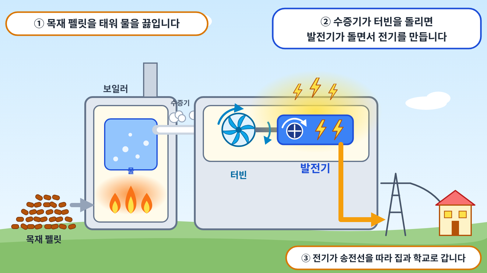

1바이오매스는 무엇일까요?
바이오매스는 식물이나 동물에서 나온 물질 가운데 에너지로 쓸 수 있는 것을 말합니다. 나무 조각, 톱밥, 볏짚, 음식물 쓰레기, 가축의 똥과 오줌 등이 모두 바이오매스입니다. 나무를 잘게 부순 뒤 높은 압력으로 눌러 작은 원통 모양으로 만든 것을 목재 펠릿이라고 하는데, 바이오매스 발전에 많이 쓰이는 연료입니다.
우리나라의 대표적인 바이오매스 발전소는 강원도 강릉에 있는 영동에코발전본부입니다. 이 발전소는 처음에는 석탄 발전소로 세워졌으나, 2017년과 2020년에 연료를 목재 펠릿으로 바꾸었습니다. 이곳에서는 한 해에 약 100만 톤의 목재 펠릿을 사용합니다.
2바이오매스로 어떻게 전기를 만들까요?

바이오매스로 전기를 만드는 방법은 두 가지입니다. 첫째, 바이오매스를 직접 태우는 방법입니다. 목재 펠릿이나 나무 조각을 보일러 안에서 태워 물을 끓이면 온도와 압력이 높은 수증기가 만들어집니다. 이 수증기가 터빈을 회전시키고, 터빈과 연결된 발전기가 함께 회전하면서 전기가 생산됩니다.
둘째, 바이오매스를 썩힐 때 나오는 가스를 이용하는 방법입니다. 음식물 쓰레기나 가축의 똥과 오줌을 공기가 없는 큰 통에 넣어 두면 미생물이 이를 분해하면서 바이오가스가 생깁니다. 이 가스를 모아 태워서 전기를 만듭니다.
3바이오매스 발전의 좋은 점은 무엇일까요?
바이오매스 발전은 버려지는 물질을 연료로 사용하므로 쓰레기를 줄이는 효과가 있습니다. 나무와 풀은 베어 내도 다시 심어 기를 수 있으므로 연료를 계속 얻을 수 있습니다. 또한 식물은 자라는 동안 공기 중의 이산화탄소를 흡수합니다. 그래서 바이오매스를 태울 때 나오는 이산화탄소는 식물이 흡수했던 것을 다시 내보내는 것이라고 보기도 합니다. 날씨나 시간의 영향을 받지 않고 전기를 생산할 수 있다는 점도 장점입니다.
4바이오매스 발전에서 생각해 볼 점은 무엇일까요?
바이오매스를 태울 때에도 이산화탄소와 미세먼지가 나옵니다. 베어 낸 나무가 다시 그만큼 자라려면 수십 년이 걸리는데, 그동안에는 공기 중의 이산화탄소가 늘어난 상태로 남습니다. 연료를 마련하기 위해 숲의 나무를 지나치게 많이 베어 내면 숲이 훼손될 수 있습니다. 또한 우리나라에서 발전에 쓰는 목재 펠릿은 대부분 외국에서 수입하는데, 먼 거리를 배로 운반하는 과정에서도 에너지가 쓰입니다. 이러한 문제 때문에 우리나라는 수입한 목재 펠릿으로 만든 전기에 대한 지원을 줄여 나가고 있습니다.